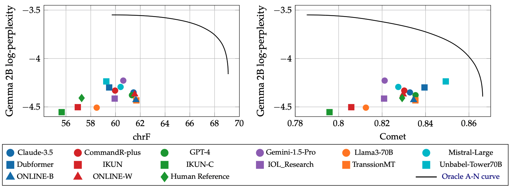

You Cannot Feed Two Birds with One Score: the Accuracy-Naturalness Tradeoff in Translation
Gergely Flamich
09/05/2025
gergely-flamich.github.io
In Collaboration With

the goals of translation
Accuracy
Translation carries the meaning of the source text
Naturalness
Translation sounds good in target language
measuring translation quality
Ingredients
- Have dataset of source text
- Have dataset of human reference translations
- Translation system \(Q_{y \mid x}\) to translate source text
Human Evaluations
Multidimensional Quality Metrics (MQM) [2]

Classic Automated Metrics
Examples: BLEU, chrF
Purely semiotic: compare to human reference translation
✅ simple
❌ limited by the human reference
Neural Metrics
Examples: MetricX, Comet
Large language model-based: predict MQM scores

✅ Jointly assess accuracy and naturalness
Feeding Two birds with one score

Feeding Two birds with one score
Should we assess accuracy and naturalness jointly?


Table from WMT24 findings paper [1].
where we are
- No formal notion of accuracy or naturalness
- Their interaction not well understood
- Community uses single-score assessments
- Results don't seem to align with human evals
Information theory to the rescue
üí° Blau and Michaeli [3] already solved a similar issue!
Accuracy \(\leftrightarrow\) Distortion
Naturalness \(\leftrightarrow\) Realism/Distinguishability
Ingredients
- Source sentence \(x\)
- Translation system \(Q_{y \mid x}\)
- Reference translation \(y^r \sim Q_{y \mid x}^{\mathrm{human}}\)
- Hypothesis/candidate \(y^c \sim Q_{y \mid x}\)
Accuracy
- Distortion metric: \(\Delta(x, y^r, y^c) \geq 0\)
- Accuracy: average negative distortion

Naturalness: Intuition


Naturalness: Definition I
- Identify naturalness with distinguishability
- We pick a reference distribution \(R_y\)
Naturalness: Definition II
- Translation marginal \(Q_y\)
- Distinguishability is equivalent to statistical distance \(D(Q_y, R_y)\) (see [5])
\[ N(Q_{y \mid x}) = -D(Q_y, R_y) \]
Are perfect accuracy and naturalness the same?
Perfect naturalness \(\Rightarrow\) perfect accuracy?
Perfect accuracy \(\Rightarrow\) perfect naturalness?
- No, according to Blau and Michaeli's setup [3]
- No, according to our setup [4]
what is the tradeoff like?
Accuracy-naturalness function:
- \(A(N)\) is non-increasing
- If \(D\) convex in first slot, then \(A(N)\) concave
Approximating the curve
üí° Use LLM scores to judge the translations!
ü§î Does this correspond to some \(D(Q, P)\)?
EN \(\to\) DE: I’ve wanted to fly since I was a child.
where is the SOTA?
Close to the curve, accuracy and naturalness anti-correlate
contributions
- Proposed a formal definition of accuracy and naturalness
- Extended the theory of Blau and Michaeli
- Showed that tradeoff must exist in practice
- Assessed the performance of the current state-of-the-art
- (In the paper:) showed connection between no-reference metrics and statistical distances
References I
- [1] Kocmi et al. (2024). Findings of the WMT24 general machine translation shared task: the LLM era is here but mt is not solved yet. In Proceedings of the Ninth Conference on Machine Translation (pp. 1-46).
- [2] Freitag et al. (2021). Experts, errors, and context: A large-scale study of human evaluation for machine translation. Transactions of the Association for Computational Linguistics, 9, 1460-1474.
References II
- [3] Yochai Blau and Tomer Michaeli. The perception-distortion tradeoff. In Proceedings of the IEEE conference on computer vision and pattern recognition, pp. 6228–6237, 2018.
- [4] F et al. (2025). You Cannot Feed Two Birds with One Score: the Accuracy-Naturalness Tradeoff in Translation. arXiv preprint arXiv:2503.24013.
References III
- [5] Sriperumbudur et al. (2009). On integral probability metrics,φ-divergences and binary classification. arXiv preprint arXiv:0901.2698.